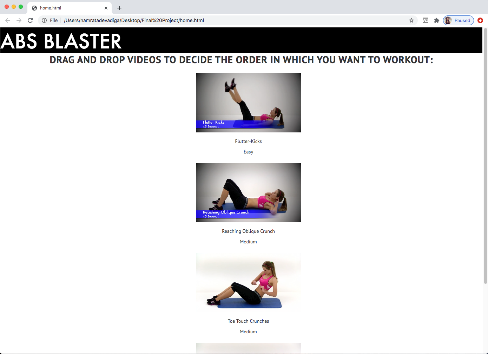
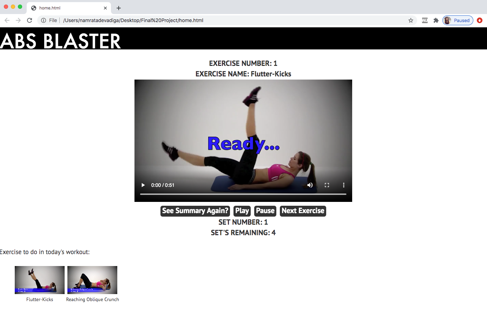

Abs Blaster
Abs Blaster is a fitness application for users who want to work specifically on their ab muscles. The goal of the application was to help a user plan and create an abs workout specifically for their own body type. The users were given the ability to customise their workout based on the level of difficulty that they wanted to achieve. Once the user had set their goals they could then exercise along with the videos they had chosen for their workout plan. This application was created using HTML, CSS, Javascript, jQuery and Bootstrap.

For creating their training plan the users were provided with check boxes to easily select/unselect exercise videos that they wanted to add/remove from their workout session. Each exercise had a small video associated with it to help the user understand the exercise they were picking for their workout plan.

The users were given a drag and drop functionality to interchange the order of the exercises in their workout session.

Imporatant and relevant information on the pages were highlighted using bolder text. White spaces were used make the application less cluttered and help the users concentrate on their main goal of planning a customised training routine.

The user was given the option to easily navigate through the various steps of planning their workout and a choice to go back at any given point in time to modify their training routine. The buttons were highlighted with a black color on the white background to help the user to easily navigate through the pages and direct them to expected next step in the application.
